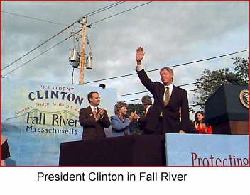

 On the Horizon
As we head into the final days
of the campaign, we need your help
energizing your community to
GET OUT THE VOTE!Call the Clinton/Gore office number
below to volunteer.Massachusetts Highlights
November 3 - The President in Springfield
September 28 - The President in Fall River
Clinton-Gore '96 Headquarters
133 Portland Street
5th Floor
Boston, MA 02114Phone: 617-227-0496
Fax: 617-742-6598
State Director: Matt O'Neil
Massachusetts Democratic Coordinated Campaign
133 Portland Street
5th Floor
Boston, MA 02114Phone: 617-742-6770
Fax: 617-742-6598
The Coordinated Campaign is a distinct entity, directed by the Democratic National Party and the State Democratic Parties, and designed to elect Democrats to all levels of office.
Paid for by Clinton/Gore ’96 General Election Committee, Inc.